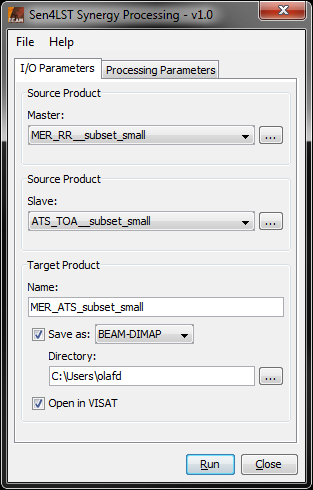

| Sen4LST Synergy Processing |
|
The Sen4LST Synergy Processing Tool allows to ....
brief summary, reference to ATBD...
The Sen4LST Synergy Processing Tool can be invoked from the VISAT tool menu by selecting
the Sen4LST Synergy Processing... command, or in batch mode by using the command line
tool gpt (Graph Processing Tool) which is located
in the BEAM bin directory. For the latter type
gpt Sen4LST.Sdr -h for further information.
Selecting the Sen4LST Synergy Processing command from the VISAT tool menu pops up the following dialog:

Master: Here the user specifies the master product. The combo box presents a list of all products open in VISAT. The user may select one of these or, by clicking on the button next to the combo box, choose a product from the file system.
Slave: Here the user specifies the slave product. The combo box presents a list of all products open in VISAT. The user may select one of these or, by clicking on the button next to the combo box, choose a product from the file system.
Name: Used to specify the name of the target product.
Save to: Used to specify whether the target product should be saved to the file system. The combo box presents a list of file formats, currently BEAM-DIMAP, GeoTIFF, and HDF5.
Open in VISAT: Used to specify whether the target product should be opened in VISAT. When the the target product is not saved, it is opened in VISAT automatically.